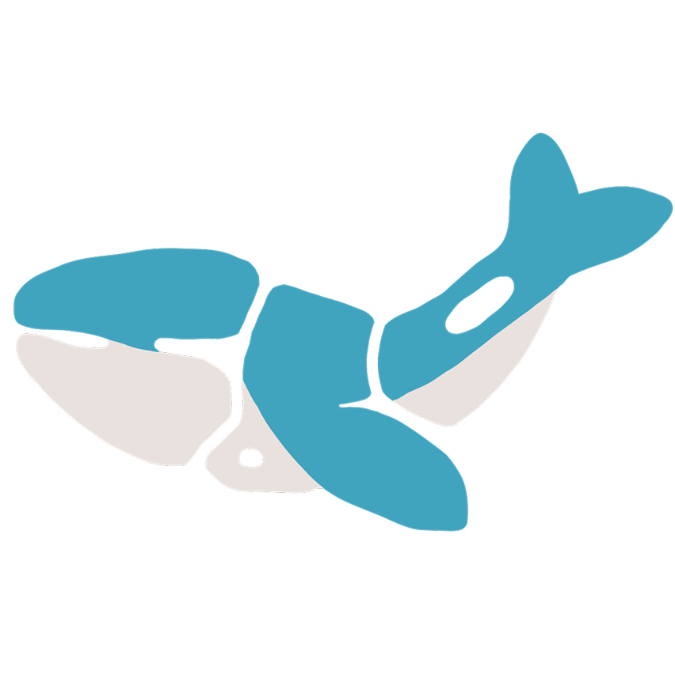

- ＜制作期間＞
- 4ヶ月
- ＜使用スキル＞
- HTML
- CSS
- Sass
- JavaScript
- jQuery
- PHP
- ＜使用ツール＞
- Visual Studio Code
- Figma
- WordPress
- Local
- FileZilla
- GitHub
Sae Portfolio
架空のハンバーガーサイト
（RaiseTech課題 WordPressテーマ開発）

コメント
この作品は、RaiseTechの上級課題として制作したWordPress対応の架空ハンバーガーショップサイトです。 コーディングからWordPressテーマ化、そしてサーバーへのデプロイまで、実務に近い一連の流れを体験しました。
初めてFLOCSS設計を導入し、コードの整理や再利用性を意識した構成を心がけました。 また、ブロックエディタを用いたデザインの微調整や、functions.phpを通じた機能追加など、お客様が操作することを想定して制作しました。
サーバーへのデプロイを通して、サイトがどのような仕組みで動いているのか、その原理を理解するきっかけにもなりました。 実際に手を動かして構築する中で、「Webサイトを完成させるまでの全体像」をつかめた経験は大きな財産です。
この課題を通して、単に見た目を作るだけでなく、 “運用する人”の目線で考えることの大切さを学びました。